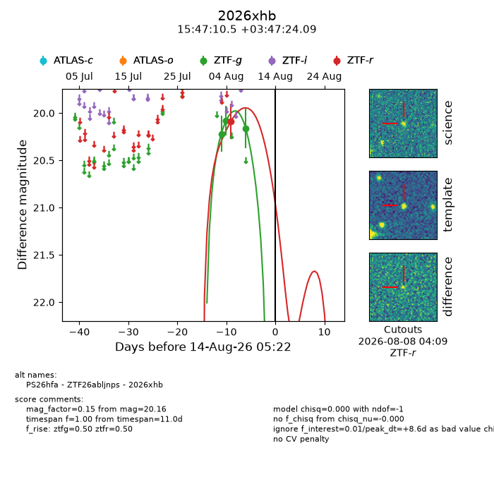
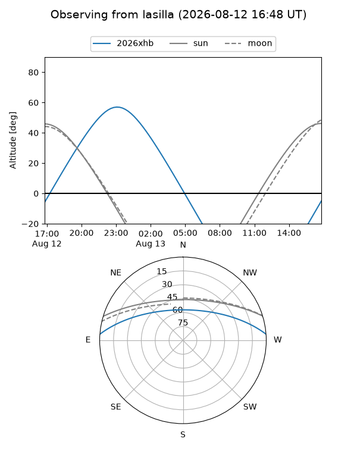
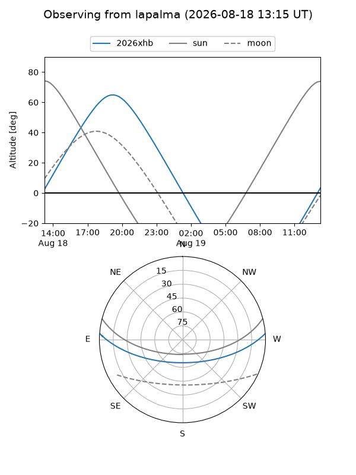
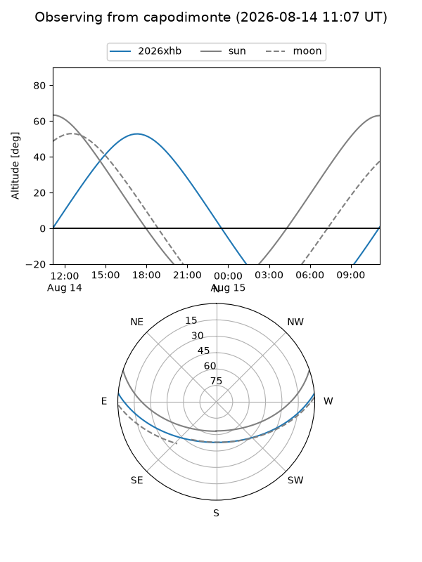
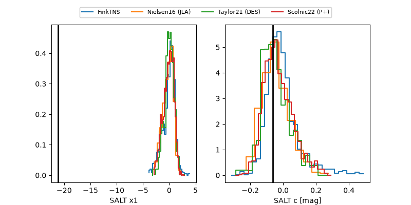

2026xhb
Target 2026xhb at 2026-08-14 05:25
Aliases and brokers:
FINK-ZTF: ztf.fink-portal.org/ZTF26abljnps
Lasair-ZTF: lasair-ztf.lsst.ac.uk/objects/ZTF26abljnps
ALeRCE-ZTF: alerce.online/object/ZTF26abljnps
YSE-PZ: ziggy.ucolick.org/yse/transient_detail/2026xhb
TNS name: wis-tns.org/object/2026xhb
Direct TNS query: direct search
alt names
ZTF26abljnps (ztf,fink_ztf)
2026xhb (tns,yse)
PS26hfa (panstarrs)
Coordinates:
equatorial (ra, dec) = 236.7938,+3.79003
equatorial (HMS+DMS) = 15:47:10.51,+03:47:24.09
galactic (l, b) = (11.7109,+42.04014)
Flags:
TNS type: nan
peak dt: +8.6
Photometry:
last ztfg=20.16, ztfr=20.09
3 ztfg, 1 ztfr detections
Lightcurve

Visibility



Additional plots
